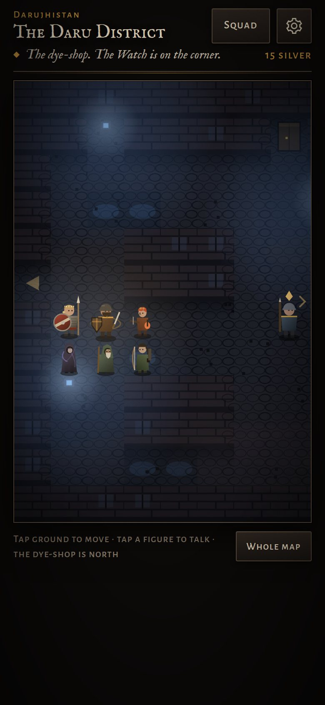

You lead the Fourth Squad, a crew of Malazan marines nobody wrote a book about, from the wreck of Pale across the Rhivi Plain to Darujhistan and the Fete, on the Bridgeburners' road. Turn-based squad fights with flanking, munitions and warren strain. Talk that rolls dice: you pick who speaks, you see the odds, and what the squad did earlier counts. A Deck of Dragons reading each chapter, and the card you draw changes the fights. The prologue and all seven chapters, with endings that follow your choices.
It opens in your browser and runs on your own device. Nothing to buy, no account, no download from a store. Your saves stay on the phone or PC you play on.

The Daru District at night. Tap the ground to move, tap a figure to talk.
Put it on your home screen Two taps, and it opens full screen like any other app. Playing in the browser works too.
iPhone or iPad
Open the link in Safari.
Tap the Share button at the bottom of the screen.
Scroll down the list and tap Add to Home Screen, then Add.
Open it from the home screen from then on. On an iPhone the home-screen copy keeps its own saves, separate from Safari's, so start your sergeant there.
Android
Open the link in Chrome.
Tap the menu in the top corner.
Tap Add to Home screen (on some phones Install app), then Install.
Chrome may offer Install on its own at the bottom of the screen; that does the same thing. Samsung Internet: menu, then Add page to › Home screen.
Windows PC or Mac
Open the link in Chrome or Edge.
The title screen offers Install. Click it. (Or click the small install icon at the right end of the address bar.)
It opens in its own window, with a shortcut on the desktop and in the Start menu or Dock.
Safari on a Mac: File › Add to Dock. Firefox can't install web apps, so just play it in the tab. On a PC, press F for full screen.
Good to know
Offline. After the first load the whole game is on your device. Airplane mode is fine.
Updates. It checks for a new version when it opens. When Update ready appears, tap it; it never reloads mid-fight.
Saves. Each sergeant has their own save on the title screen, so a household can share one phone. To move a sergeant to another device, copy the save code from Squad › Save and load it there.
Difficulty. Story if you're here for the tale, Soldier for a fair fight, Bridgeburner if you want the wounds to carry between fights.
Grown-up. A war story in the book's tone; not one for the kids.